Overview
janos is a general-purpose R framework for specifying, simulating, and analysing dynamical systems. It provides a unified interface from deterministic ODEs through stochastic differential equations, continuous-time Markov chains, partial differential equations, delay differential equations, discrete maps, jump-diffusion processes, and piecewise deterministic Markov processes, all driven by a formula-to-C++ compilation engine that delivers compiled performance without requiring users to write C++ code.
The design separates what a system does (the model specification) from how it is solved (the solver backend). A single model_spec() object can be passed to any compatible solver, and the package handles compilation, caching, and dispatch transparently. On top of the simulation layer, janos ships an analysis stack covering phase and qualitative portraits, Fokker-Planck densities and quasi-potentials, bifurcation continuation, adjoint sensitivity, multi-level Monte Carlo, rare-event probabilities, a family-aware Lyapunov advisor that dispatches over eight construction algorithms, and a chaos-diagnostics suite (Lyapunov spectrum, correlation dimension, Poincare sections, 0-1 test, bifurcation diagrams).
What is inside
| Layer | Components | Count |
|---|---|---|
| Solvers (continuous, discrete, spatial, stochastic) | RK4, Dormand-Prince RK4(5), Rosenbrock Rodas3, maps, DDE, MOL 1D, MOL 2D, Euler-Maruyama, Milstein, jump-diffusion, tau-leap (adaptive and midpoint), hybrid SSA/CLE, SSA direct, SSA NRM, SSA MNRM, PDMP, RDME | 18 |
| Noise processes | correlated Gaussian (Cholesky), Levy alpha-stable (CMS), fractional Brownian (circulant embedding), colored 1/f^beta (FFT) | 4 |
| Qualitative portraits |
phase_portrait, map_portrait, sde_portrait, dde_portrait, pdmp_portrait
|
5 |
| Lyapunov construction algorithms | quadratic, Goh, MacArthur, Gilpin, SOS, RBF, Massera, CPA | 8 |
| Lyapunov families (advisor dispatch) | ODE, map, SDE, DDE, PDMP, CTMC (Foster), reaction-diffusion PDE | 7 |
| Fokker-Planck and rare-event tools |
fp_stationary, fp_stationary_2d, fp_potential, fp_kramers_rate, estimate_qsd, estimate_extinction, density_landscape_2d
|
7 |
| Chaos diagnostics |
lyapunov_spectrum, correlation_dimension, poincare_section, zero_one_test, bifurcation_diagram
|
5 |
| Other analysis |
continuation, bifurcation_sweep, adjoint_sensitivity, spectral_analysis, mlmc_estimate, ensemble_sim, observe
|
7 |
Exported S3 classes (all with print, summary, plot) |
28 | 28 |
All 65 user-facing functions are formula-based: the C++ back-end is never exposed. Compilation artifacts are cached under tools::R_user_dir("janos", "cache") and the compile pipeline self-repairs on cache corruption, so the second call to any already-seen system is instantaneous.
Installation
# install.packages("devtools")
devtools::install_github("robustecologies/janos")janos requires a C++ compiler (GCC, Clang, or MSVC) because it compiles model formulas to native code at runtime via Rcpp. On most systems this is already available; if not, install Rtools on Windows or Xcode Command Line Tools on macOS.
Guided tour
The following five examples span the main modelling regimes covered by janos: deterministic multi-species ecology with chaotic dynamics, algebraic stability certification for a competitive system, stochastic chemistry with ensemble variability, spatio-temporal reaction-diffusion, and stochastic reaction-diffusion on a network. Each subsection concludes with a pointer to the vignette that develops the topic in full.
1. Chaos in a three-species food chain
The Hastings-Powell model [1] couples two Holling type-II functional responses along a tri-trophic chain and exhibits a teacup chaotic attractor for standard parameter values. With \(x\) the (logistically growing) resource, \(y\) the intermediate consumer, and \(z\) the top predator, the non-dimensional equations read
\[ \begin{aligned} \frac{d x}{d t} \;&=\; x\,(1-x) \;-\; \frac{a_{1}\,x\,y}{1 + b_{1}\,x} & \text{(resource)} \\[2pt] \frac{d y}{d t} \;&=\; \frac{a_{1}\,x\,y}{1 + b_{1}\,x} \;-\; \frac{a_{2}\,y\,z}{1 + b_{2}\,y} \;-\; d_{1}\,y & \text{(consumer)} \\[2pt] \frac{d z}{d t} \;&=\; \frac{a_{2}\,y\,z}{1 + b_{2}\,y} \;-\; d_{2}\,z & \text{(predator)} \end{aligned} \]
hp <- model_spec(
rhs = list(
x ~ x * (1 - x) - (a1 * x * y) / (1 + b1 * x),
y ~ (a1 * x * y) / (1 + b1 * x) -
(a2 * y * z) / (1 + b2 * y) - d1 * y,
z ~ (a2 * y * z) / (1 + b2 * y) - d2 * z
),
state_names = c("x", "y", "z"),
parms = list(a1 = 5, b1 = 3, a2 = 0.1, b2 = 2,
d1 = 0.4, d2 = 0.01),
init = c(x = 0.7, y = 0.2, z = 9.0)
)
hp_run <- dyn_sim(hp, t_max = 2000, solver = solver_rk4(),
discard_transient = 600, verbose = FALSE)
plot(hp_run, title = "Hastings-Powell tri-trophic food chain", epsilon = 0.0001)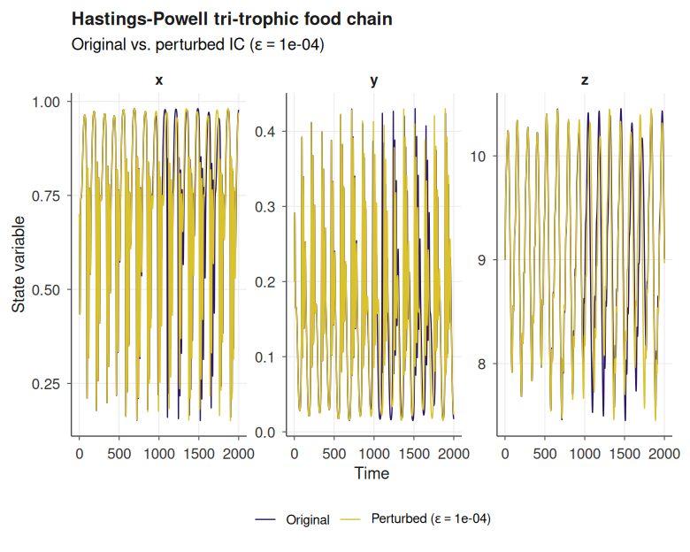
plot(hp_run, type = "phase", title = "Teacup attractor projection", epsilon = 0.0001)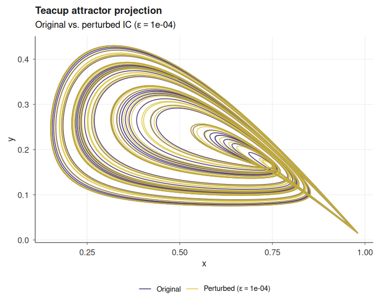
The first panel overlays the reference trajectory and a companion trajectory launched from a perturbed initial condition (controlled by the argument epsilon); the rapid divergence of the two curves is a direct visualisation of sensitive dependence on initial conditions, a defining signature of deterministic chaos. The second panel projects the three-dimensional attractor onto a pair of state variables; a rotatable 3D rendering is available through type = "attractor", backed by plotly, and a full phase-space decomposition (vector field, nullclines, equilibria with stability classification, streamlines) is produced by phase_portrait(). See vignette("introduction") and vignette("qualitative-analysis") for the complete workflow.
A quantitative fingerprint of the attractor is produced by the chaos-analysis stack shipped with the package. lyapunov_spectrum() computes the full Lyapunov exponents via QR renormalisation of the variational flow and reports the Kaplan-Yorke dimension; correlation_dimension() estimates the Grassberger-Procaccia fractal dimension from pair statistics of attractor points; zero_one_test() applies the Gottwald-Melbourne translation-variable criterion and returns a scalar verdict close to one for chaos and zero for regular dynamics; bifurcation_diagram() sweeps one parameter across a range, simulates the model at each value, and retains post-transient samples of the chosen observable, so that period-doubling cascades, tangent and Hopf bifurcations, and periodic windows embedded in chaotic regions emerge as structural features of the resulting cloud of points. When compute_lyapunov = TRUE, the largest Lyapunov exponent is evaluated at every parameter value and rendered in a companion panel, so the sign change marking the onset of chaos can be read off the same figure. The scan dispatches across all available cores through a cross-platform parallel backend (mclapply on Unix, PSOCK clusters on Windows), with Esc returning a partial diagram rather than discarding the run.
lsp <- lyapunov_spectrum(hp, t_max = 80, dt = 0.01,
renorm_interval = 1, discard_transient = 10,
verbose = FALSE)
print(lsp)
#>
#> Lyapunov spectrum (ode)
#> --------------------------
#> lambda_1 = 0.02544
#> lambda_2 = -0.01183
#> lambda_3 = -0.65352
#> sum = -0.63991
#> D_KY = 2.02083
#> Verdict: chaotic (1 positive exponent)
plot(lsp, type = "spectrum")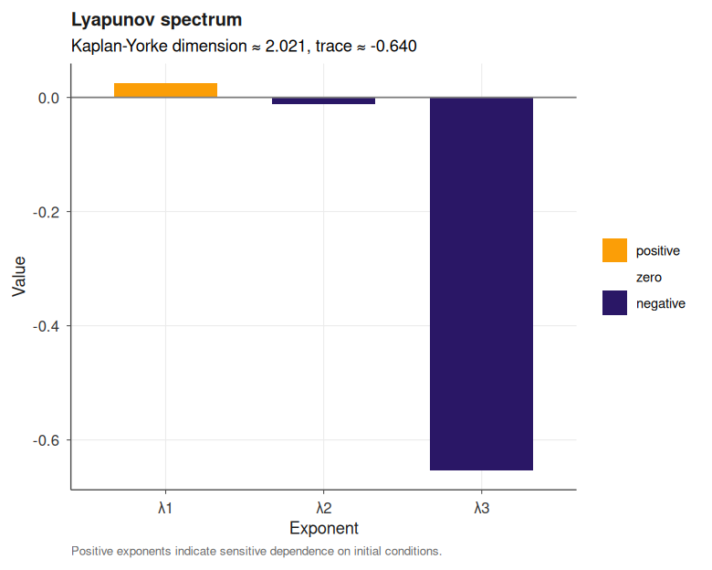
cd <- correlation_dimension(hp_run, n_points = 1500)
print(cd)
#>
#> Correlation dimension
#> --------------------
#> D_2 = 1.6010
#> points = 1500
#> Theiler = 10
#> fit eps = [0.1175, 0.4399]
plot(cd)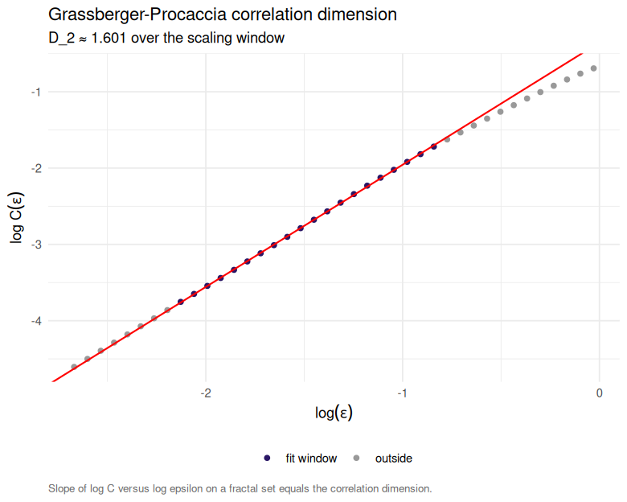
z01 <- zero_one_test(hp_run, var = "x")
print(z01)
#>
#> 0-1 test for chaos
#> ------------------
#> observable : x
#> samples : 501 (stride 28)
#> n_c : 100
#> K (median) : 0.8653
#> verdict : chaotic
plot(z01)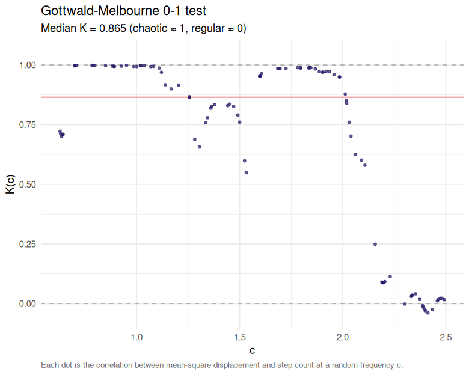
bd <- bifurcation_diagram(hp, par_name = "b1", par_range = c(2.2, 3.2),
observable = "z", n_par = 300, t_max = 3000,
discard_transient = 500, compute_lyapunov = TRUE,
verbose = FALSE)
plot(bd)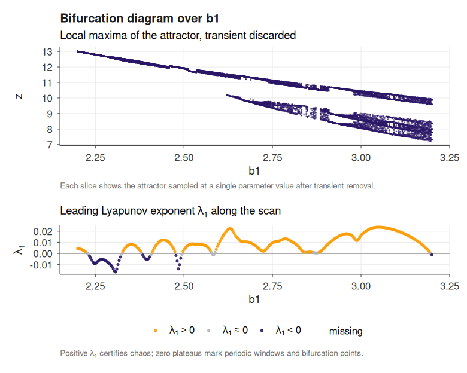
For an interactive time-series viewer, plot(hp_run, type = "dygraph") produces a dygraphs panel with range selector and hover legend. The full catalogue of strange attractors, from Lorenz to Kuramoto-Sivashinsky, is worked out in vignette("chaotic-systems").
2. Stability certificate for a competitive 2D model
For a two-species competitive Lotka-Volterra with an interior equilibrium, analyse_lyapunov() inspects the family, classifies the subtype (gLV) and dispatches to the Goh logarithmic construction [2], returning an algebraic certificate. With \(x\) and \(y\) the two competing species, the non-dimensional equations read
\[ \begin{aligned} \frac{d x}{d t} \;&=\; x\,(1 - x - \alpha_{12}\,y) \\[2pt] \frac{d y}{d t} \;&=\; y\,(1 - y - \alpha_{21}\,x) \end{aligned} \]
with interspecific coefficients \(\alpha_{12} = 0.5\) and \(\alpha_{21} = 0.3\) satisfying the coexistence condition \(\alpha_{12}\,\alpha_{21} < 1\). The function phase_portrait() computes and assembles the qualitative geometric structure of a model_spec(), and captures the vector field, nullclines, equilibrium points (classified by stability type), streamlines, stable and unstable manifolds, and solution trajectories for any two- or three-dimensional ODE system; see vignette("qualitative-analysis").
comp <- model_spec(
rhs = list(
x ~ x * (1 - x - 0.5 * y),
y ~ y * (1 - y - 0.3 * x)
),
state_names = c("x", "y"),
parms = list(),
init = c(x = 0.2, y = 0.2)
)
pp <- phase_portrait(comp, xlim = c(-0.1, 2), ylim = c(-0.1, 2), trajectories = FALSE)
plot(pp, feasible = TRUE)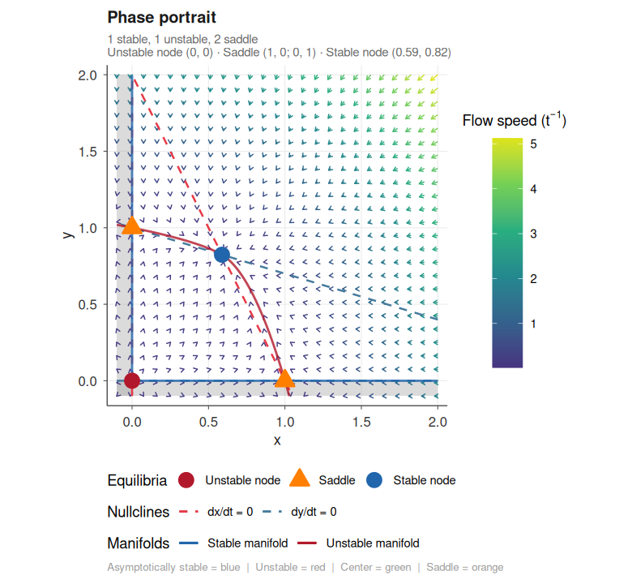
rep <- analyse_lyapunov(comp, verbose = FALSE)
print(rep)
#> ¡ Lyapunov report
#> Family : ode
#> Method : goh
#> Feasible : ✔ yes
#> Certificate : algebraic
#> Reason : goh (Goh logarithmic Lyapunov function; VL-stability via heuristic)
#> ----
#> ¡ Lyapunov function
#> Method : goh
#> System : glv (n = 2)
#> x* : [0.5882, 0.8235]
#> V > 0 : ✔ certified
#> V-dot < 0 : ✔ certified
#> Residual : -6.000e-01
#> DOA : positive_orthant
#> Note : Goh logarithmic Lyapunov function; VL-stability via heuristic
#> Elapsed : 0.000s
plot(rep$lyapunov, type = "phase_portrait",
title = "Trajectories descending V")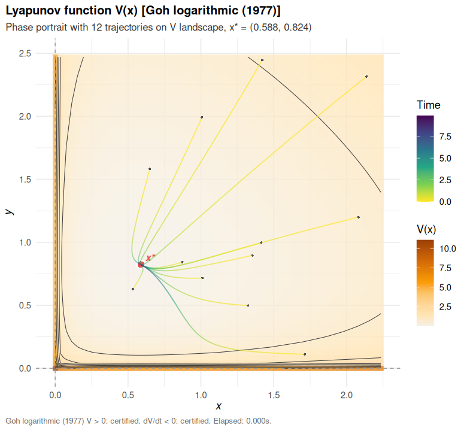
The advisor, the eight construction algorithms, and all family-specific certificate views (cobweb, iterate_decay, generator_field, lmi_spectrum, regime_lmi, energy_decay, …) are documented in vignette("lyapunov_functions").
3. Stochastic Brusselator and ensemble variability
The Brusselator [3] is the canonical two-species autocatalytic reaction network exhibiting stable limit cycles. In its stochastic formulation the four elementary reactions and their mass-action propensities read
\[ \begin{aligned} \varnothing &\;\xrightarrow{A\,\Omega}\; X & \text{(influx)} \\[2pt] 2X + Y &\;\xrightarrow{X(X-1)\,Y / \Omega^{2}}\; 3X & \text{(autocatalysis)} \\[2pt] X &\;\xrightarrow{B\,X}\; Y & \text{(conversion)} \\[2pt] X &\;\xrightarrow{X}\; \varnothing & \text{(degradation)} \end{aligned} \]
where \(\Omega\) is the system size and propensities are scaled so that the thermodynamic limit recovers the deterministic rate equations. Simulated exactly via the Gillespie direct algorithm [4], the stochastic trajectory shows fluctuations around the deterministic orbit; repeating the simulation with ensemble_sim() recovers the full distribution.
Omega <- 80
bruss <- model_spec(
stoichiometry = list(
r1 = c(X = 1L, Y = 0L),
r2 = c(X = 1L, Y = -1L),
r3 = c(X = -1L, Y = 1L),
r4 = c(X = -1L, Y = 0L)
),
propensities = list(
r1 ~ A * Omega,
r2 ~ X * (X - 1) * Y / (Omega * Omega),
r3 ~ B * X,
r4 ~ X
),
state_names = c("X", "Y"),
parms = list(A = 1.0, B = 3.0, Omega = Omega),
init = c(X = as.integer(Omega), Y = as.integer(Omega))
)
one <- dyn_sim(bruss, t_max = 40,
solver = solver_ssa_direct(output_dt = 0.1),
discard_transient = 0, verbose = FALSE)
plot(one, title = "Stochastic Brusselator: a single realisation")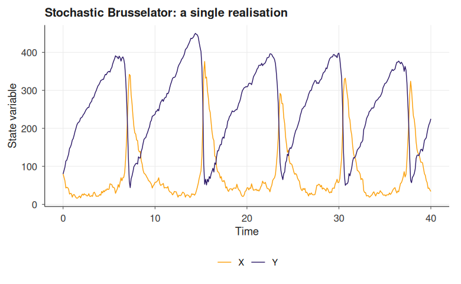
ens <- ensemble_sim(bruss, n_replicates = 40, t_max = 40,
solver = solver_ssa_direct(output_dt = 0.2),
parallel = FALSE, verbose = FALSE)
plot(ens, type = "fan", title = "Brusselator: ensemble fan chart (n = 40)")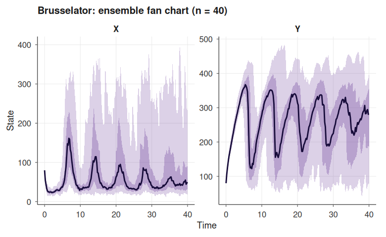
See vignette("stochastic-simulation") for CTMC modelling, tau-leaping, MLMC variance reduction, and quasi-stationary distributions, and vignette("ensemble-simulation") for the full range of ensemble plot types (fan, spaghetti, terminal, extinction).
4. Fisher-KPP travelling wave (spatio-temporal physics)
The Fisher-KPP equation [5], the prototypical reaction-diffusion model for an invading front, couples linear diffusion with logistic growth,
\[ \frac{\partial u}{\partial t} \;=\; D\,\frac{\partial^{2} u}{\partial x^{2}} \;+\; r\,u\,(1 - u), \]
and admits travelling wave solutions with asymptotic speed \(c^{\ast} = 2\sqrt{D\,r}\). janos compiles the formula and integrates the semi-discretised system via the method of lines.
kpp <- model_spec(
pde = list(u ~ D * d2x(u) + r * u * (1 - u)),
state_names = "u",
parms = list(D = 0.05, r = 1.0),
spatial = list(
domain = c(0, 40), n_grid = 81,
bc = list(u = list(type = "neumann", left = 0, right = 0))
),
init = function(x) as.numeric(x < 3)
)
kpp_run <- dyn_sim(kpp, t_max = 25,
solver = solver_mol(dt = 0.01, subsample = 50),
discard_transient = 0, verbose = FALSE)
plot(kpp_run, title = "Fisher-KPP invading front (kymograph)")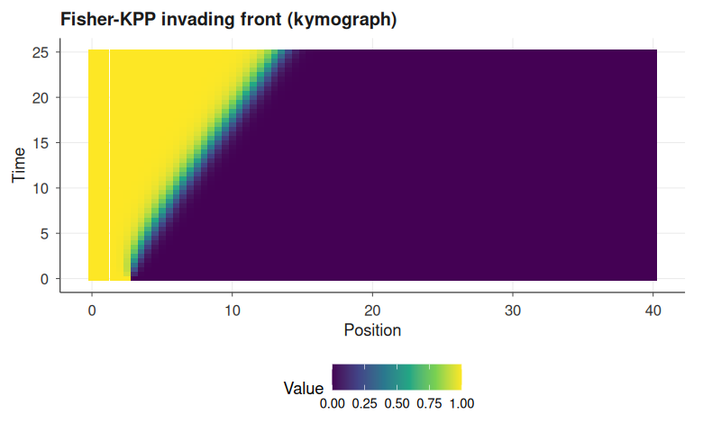
plot(kpp_run, type = "snapshot",
title = "Fisher-KPP profiles at selected times")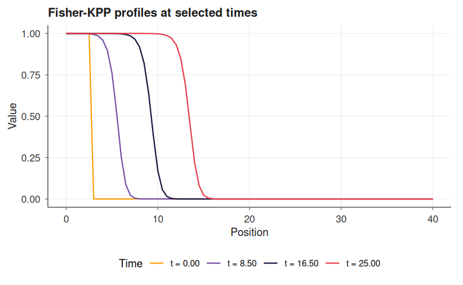
For 2D reaction-diffusion (Gray-Scott, Turing patterns, FitzHugh-Nagumo waves) and boundary-condition cookbook, see vignette("spatial-dynamics").
5. Stochastic epidemic on a network (RDME)
The reaction-diffusion master equation [6] discretises space into voxels (or network nodes), runs a local well-mixed Gillespie reaction network inside each voxel, and couples adjacent voxels through first-order hopping reactions whose rates encode the diffusion coefficients. The resulting process is a continuous-time Markov chain over the joint state space of size \(n_{\text{species}} \times n_{\text{nodes}}\), simulated exactly by an extended direct method. Here a susceptible-infected-susceptible (SIS) epidemic [7] runs on a periodic ring of ten patches, seeded at a single node; at each node \(v\) the local reactions and propensities are
\[ \begin{aligned} S_{v} + I_{v} &\;\xrightarrow{\beta\,S_{v}\,I_{v}}\; 2\,I_{v} & \text{(infection)} \\[2pt] I_{v} &\;\xrightarrow{\gamma\,I_{v}}\; S_{v} & \text{(recovery)} \end{aligned} \]
and each species hops between adjacent nodes \(v \sim w\) through first-order diffusion reactions \(X_{v} \xrightarrow{D_{X}\,X_{v}} X_{w}\) with \(X \in \{S, I\}\), so that infection spreads by intra-patch contact and by inter-patch diffusion of infected individuals.
adj <- ring_graph(10, bc = "periodic")
sis_ring <- model_spec(
stoichiometry = list(
infection = c(S = -1L, I = 1L),
recovery = c(S = 1L, I = -1L)
),
propensities = list(
infection ~ beta * S * I,
recovery ~ gamma * I
),
state_names = c("S", "I"),
parms = list(beta = 0.004, gamma = 0.1,
D_S = 0.05, D_I = 0.2),
init = function(node) {
if (node == 1L) c(S = 45L, I = 5L)
else c(S = 50L, I = 0L)
},
spatial = list(
diffusion_rates = list(S ~ D_S, I ~ D_I),
adjacency = adj
)
)
ring_run <- dyn_sim(sis_ring, t_max = 40,
solver = solver_rdme(output_dt = 0.5, seed = 3),
discard_transient = 0, verbose = FALSE)
plot(ring_run, title = "SIS on a ring: spatio-temporal occupancy")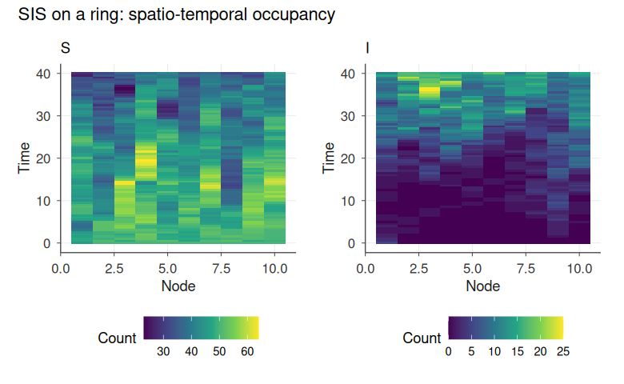
The network-RDME layer supports arbitrary topologies via lattice_graph(), ring_graph(), star_graph(), complete_graph(), and random_graph(); see vignette("spatial-dynamics") for metapopulation and lattice-ecology examples.
Feature map
Deterministic dynamics. solver_rk4() (fixed-step classical RK4), solver_rk45() (adaptive Dormand-Prince RK4(5) with PI step control), solver_rosenbrock() (L-stable Rodas3 with symbolically generated Jacobians for stiff systems), solver_map() (discrete-time maps), solver_dde() (constant-lag delay equations with interpolated history).
Stochastic differential equations. solver_euler_maruyama() and solver_milstein() with central-difference g'(X) estimation, correlated Gaussian noise via correlated_noise() (Cholesky rotation), levy_noise() (Chambers-Mallows-Stuck alpha-stable), fbm_noise() (Wood-Chan circulant embedding plus Hosking fallback), colored_noise() (FFT spectral synthesis for arbitrary 1/f^beta), and solver_jump_diffusion() for SDEs with Poisson jump channels (deterministic, normal, exponential, or uniform jump sizes).
Continuous-time Markov chains. solver_ssa_direct(), solver_ssa_nrm() (Gibson-Bruck next-reaction method), solver_ssa_mnrm() (Anderson modified next-reaction), solver_tau_leap() (adaptive leap-size selection with step rejection), solver_tau_leap_midpoint(), and solver_hybrid() (SSA/CLE switching by reaction-channel abundance).
Spatial and graph-structured dynamics. solver_mol() and solver_mol2d() for 1D and 2D PDEs with operators d1x, d2x, d1y, d2y, lap and Dirichlet/Neumann/periodic BCs; solver_rdme() for stochastic reaction-diffusion on 1D voxel grids and on arbitrary graphs produced by lattice_graph(), ring_graph(), star_graph(), complete_graph(), random_graph().
Hybrid and switched dynamics. solver_pdmp() for piecewise deterministic Markov processes: per-regime ODE integration with Lewis-Shedler thinning for non-stationary switching.
Analysis layer. Qualitative portraits (phase_portrait, map_portrait, sde_portrait, dde_portrait, pdmp_portrait); numerical bifurcation continuation with fold and Hopf detection (continuation, bifurcation_sweep); Fokker-Planck stationary densities and quasi-potentials in 1D and 2D (fp_stationary, fp_stationary_2d, fp_potential) and Kramers escape rates (fp_kramers_rate); quasi-stationary distribution estimation (estimate_qsd, Fleming-Viot particles); rare-event probabilities by importance sampling (estimate_extinction); multi-level Monte Carlo variance reduction (mlmc_estimate); continuous adjoint sensitivity for parameter gradients (adjoint_sensitivity); power-spectral-density estimation by Welch’s method (spectral_analysis); observation-noise layering (observe) with Gaussian, lognormal, Poisson and negative-binomial models; two-tier ensemble simulation (ensemble_sim) with C++ OpenMP batches for SSA/SDE/tau-leap and an mclapply/future fallback.
Chaos diagnostics. Full numerical Lyapunov spectrum via QR renormalisation of the variational flow with Kaplan-Yorke dimension (lyapunov_spectrum); Grassberger-Procaccia correlation dimension with Theiler-window correction (correlation_dimension); Poincare sections by bracketed interpolation (poincare_section); Gottwald-Melbourne 0-1 test (zero_one_test); and attractor-level bifurcation diagrams by direct simulation across a scanned parameter (bifurcation_diagram), embarrassingly parallel on Unix and Windows through a shared cross-platform dispatcher and capable of overlaying a second panel with the leading Lyapunov exponent at every scan point. This complements equilibrium-branch continuation with the Feigenbaum cascade and periodic-window structure visible on the true attractor. Interactive rendering through plot(x, type = "dygraph") and type = "delay_embedding") rounds off the chaos toolkit.
Parallelism and early termination. Every long-running analysis entry point accepts parallel = TRUE, n_cores = NULL and dispatches through a single internal helper that runs parallel::mclapply() on Unix and parallel::makePSOCKcluster() on Windows; there is no Windows fallback to serial. Covered: bifurcation_diagram, bifurcation_sweep, phase_portrait, map_portrait, sde_portrait, dde_portrait, pdmp_portrait, ensemble_sim. Work is chunked so that pressing Esc returns a partial result with $interrupted = TRUE and $metadata$n_completed / n_total metadata instead of discarding the run. The compiled OpenMP batch templates (ssa_direct, euler_maruyama, tau_leap) check the R interrupt flag between replicate chunks via a non-longjmp R_ToplevelExec helper. Windows OpenMP support is detected automatically at session start (Rtools 4.x); when absent, the batch path gracefully falls back to the R-level dispatcher.
Lyapunov stack. analyse_lyapunov() unified entry point, lyapunov_advisor() diagnostic classifier, eight algebraic and numerical constructors (lyapunov_function() auto-dispatch over quadratic, Goh, MacArthur, Gilpin, SOS via CVXR, RBF collocation, Massera converse, CPA piecewise affine), and family-specific constructors for maps, SDEs, DDEs (Krasovskii LMI), PDMPs (switched-system LMI), CTMCs (Foster lift from fluid limit), and reaction-diffusion PDEs (energy functional).
Vignettes
Detailed tutorials are available as package vignettes:
-
vignette("introduction")core workflow, formula compilation, solver selection -
vignette("solvers")solver gallery, accuracy and stability trade-offs -
vignette("stochastic-simulation")CTMC models, SSA, tau-leap, QSD, MLMC -
vignette("sde-noise")SDEs, exotic noise processes, jump-diffusion -
vignette("spatial-dynamics")PDEs (1D/2D), RDME on grids and graphs -
vignette("advanced-dynamics")DDEs, PDMPs, maps, bifurcation continuation, adjoint sensitivity -
vignette("qualitative-analysis")phase portraits, nullclines, separatrix detection -
vignette("lyapunov_functions")Lyapunov construction algorithms and family-aware advisor -
vignette("chaotic-systems")strange attractors from Lorenz to Kuramoto-Sivashinsky, with Lyapunov spectrum, correlation dimension, Poincare sections and bifurcation diagrams -
vignette("ensemble-simulation")ensemble replicates, parallelism, plot types -
vignette("API")exhaustive cross-reference of exported functions
References
[1] Hastings, A. and Powell, T. (1991). Chaos in a three-species food chain. Ecology, 72(3), 896-903. doi:10.2307/1940591
[2] Goh, B. S. (1977). Global stability in many-species systems. The American Naturalist, 111(977), 135-143. doi:10.1086/283144
[3] Prigogine, I. and Lefever, R. (1968). Symmetry breaking instabilities in dissipative systems II. Journal of Chemical Physics, 48(4), 1695-1700. doi:10.1063/1.1668896
[4] Gillespie, D. T. (1977). Exact stochastic simulation of coupled chemical reactions. The Journal of Physical Chemistry, 81(25), 2340-2361. doi:10.1021/j100540a008
[5] Fisher, R. A. (1937). The wave of advance of advantageous genes. Annals of Eugenics, 7(4), 355-369. doi:10.1111/j.1469-1809.1937.tb02153.x; Kolmogorov, A., Petrovsky, I. and Piskunov, N. (1937). Study of the diffusion equation with growth of the quantity of matter. Bulletin of Moscow State University, Ser. A, 1, 1-26.
[6] Gardiner, C. W., McNeil, K. J., Walls, D. F. and Matheson, I. S. (1976). Correlations in stochastic theories of chemical reactions. Journal of Statistical Physics, 14(4), 307-331. doi:10.1007/BF01030197
[7] Pastor-Satorras, R., Castellano, C., Van Mieghem, P. and Vespignani, A. (2015). Epidemic processes in complex networks. Reviews of Modern Physics, 87(3), 925-979. doi:10.1103/RevModPhys.87.925
Disclaimer
This package is the original creation of the author in all conceptual, theoretical, and design aspects. Implementation was assisted by Anthropic’s Claude Code v.2 (Opus 4.5-4.7) to streamline package development. All original ideas, creativity, and scientific contributions belong to the author, who maintains full responsibility for the package’s correctness and reliability. All the code has been thoroughly tested, and users are encouraged to report any issues through the package’s issue tracker.